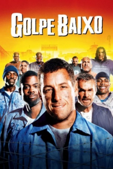

Golpe Baixo (2005)


Se não te consegues libertar, vinga-te.

Avaliação (TMDb):


6.6/10 (2.4K votos)
Avaliação (Usuário):
Outro Título:The Longest Yard
País:United States, 113 minutos
Idiomas falados:Inglês, Espanhol, Português
Gênero(s):Comédia, Drama
Diretor(s):Peter Segal
Codec:MPEG-2 (DVD)
Número: 1571
Sinopse:
Paul Crewe é um ex-astro do futebol americano preso por dirigir bêbado. Na prisão, junta-se a Caretaker e monta um time para jogar contra os guardas.
Elenco:
Adam Sandler, Chris Rock, Burt Reynolds, William Fichtner, Terry Crews, Bill Goldberg, Steve Austin, Kevin Nash, Nelly, Bob Sapp
Tipo de mídia: DVD5,
Legendas: Inglês, Espanhol, Português
Alugado: Não
Tela: 2.35:1